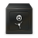
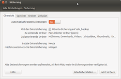
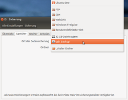
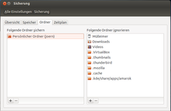
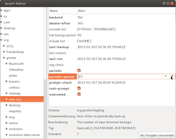
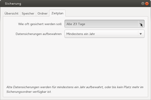

Déjà Dup
Dieser Artikel wurde für die folgenden Ubuntu-Versionen getestet:
Ubuntu 16.04 Xenial Xerus
Ubuntu 14.04 Trusty Tahr
Zum Verständnis dieses Artikels sind folgende Seiten hilfreich:
 Déjà Dup, unter Ubuntu nur "Datensicherungen" genannt, ist ein sehr einfach gehaltenes Programm zur Datensicherung. Es integriert sich gut in die Unity- als auch in die GNOME-Oberfläche. Mittels Déjà Dup lassen sich automatisiert Daten sichern, sowohl lokal (USB-Festplatte), auf einem Server (SSH, Windows-Freigaben u.a.), als auch in der Cloud.
Die Daten können GnuPG verschlüsselt und komprimiert abgelegt werden. Das von Michael Terry  entwickelte Programm nutzt im Hintergrund duplicity . Das Programm wurde in Vala geschrieben und unter der GNU GPL v3 veröffentlicht.
entwickelte Programm nutzt im Hintergrund duplicity . Das Programm wurde in Vala geschrieben und unter der GNU GPL v3 veröffentlicht.
Hinweis:
In der Vergangenheit wurde wiederholt über Probleme mit der Wiederherstellung von gesicherten Dateien berichtet. Wer Déjà Dup bereits im Einsatz hatte, sollte daher vorhandene Sicherungen verwerfen und neue erstellen (Stand: 01/2016). Eine zuverlässige Wiederherstellung einzelner Dateien mit Umlauten ist erst ab Déjà Dup 34.2 möglich, das ab Ubuntu 16.04 ausgeliefert wird. Siehe Fehlerbericht.
Installation¶
Déjà Dup ist nur bei Ubuntu vorinstalliert. Es ist in den offiziellen Paketquellen enthalten [1]:
deja-dup
 mit apturl
mit apturl
Paketliste zum Kopieren:
sudo apt-get install deja-dup
sudo aptitude install deja-dup
Gestartet wird Déjà Dup über die Sitzungsanzeige  oben rechts in der Ecke oder mit einem Klick innerhalb der "Systemeinstellungen → Sicherung" [2].
oben rechts in der Ecke oder mit einem Klick innerhalb der "Systemeinstellungen → Sicherung" [2].
Einrichtung der Sicherung¶
Nach dem Öffnen des Programms stehen je nach Ubuntu-Version verschiedene Registerkarten zur Verfügung:
"Übersicht"
"Speicher"
"Ordner" und
"Zeitplan"
Soll eine externe USB-Festplatte zur Sicherung genutzt werden, muss diese vor der Konfiguration angeschlossen werden. Und bei einer automatisierten Sicherung auch später immer angeschaltet am PC verbleiben.

Übersicht¶
In der Übersicht von Déjà Dup lässt sich als erster Punkt die "Automatische Datensicherung" mittels Schieber "AN" und "AUS" schalten. Danach folgen die allgemeinen Informationen der Sicherungseinstellungen: Wohin soll gesichert werden, was soll und was soll nicht gesichert werden, wann wurde zuletzt und wann wird als Nächstes gesichert.
"Wiederherstellen..." öffnet den Dialog für das Zurückspielen der Sicherung (siehe Punkt "Daten wieder herstellen").
Mit "Jetzt sichern" kann eine Sicherung manuell angestoßen werden. Das erste Mal folgt noch der Dialog, ob und mit welchem Passwort die Daten verschlüsselt werden sollen. Bei den folgenden Aufrufen startet die Sicherung ohne weitere Meldungen.

Speicher - Wohin soll gesichert werden?¶
Mit Klick auf das Aufklappmenü auf der Registerkarte "Speicher" wird unter "Ort der Datensicherung" definiert, wo die Sicherung abgelegt werden soll. Zur Auswahl stehen eingehängte und lokale Datenträger sowie FTP, Windows-Freigabe und weiteres.
Unter "Ordner" wird ein Verzeichnis unterhalb des definierten "Ort der Datensicherung" festgelegt, in welchen die Sicherungen abgelegt werden. Bei Verwendung von SSH müssen hier absolute Pfade (bsw. /home/benutzer/backup) angegeben werden.

Ordner - Was wird gesichert, was ignoriert?¶
Registerkarte "Ordner": Im linken Fenster können die zu sichernden Verzeichnisse hinzugefügt werden. Meist wird vermutlich der vorgewählte "Persönliche Ordner" bzw. das Homeverzeichnis gesichert, wobei versteckte Dateien und Verzeichnisse automatisch mitgesichert werden (z.B. der Profilordner von Firefox bzw. Thunderbird). Um diese oder andere Daten nicht zu sichern, können im rechten Fenster auch zu ignorierende Ordner festgelegt werden. Damit bleibt die Datensicherung übersichtlich und dauert nicht so lang.
Was nötig ist, kann jeder Benutzer für sich selbst definieren. Über die Symbole  und das
und das  können die Verzeichnisse den eigenen Wünschen entsprechend ausgewählt und entfernt werden. Weitere Denkanstöße finden sich auch in Datensicherung.
können die Verzeichnisse den eigenen Wünschen entsprechend ausgewählt und entfernt werden. Weitere Denkanstöße finden sich auch in Datensicherung.
Zeitplan - Wie oft wird für wie lang gesichert?¶
 Registerkarte "Zeitplan": Hier wird zum einen eingetragen, ob täglich, wöchentlich oder seltener gesichert werden soll. Zum anderen kann hier die Zeit begrenzt werden, wie lange die Daten aufgehoben werden.
 Seit Ubuntu 12.10 stehen nur noch täglich und wöchentlich zur Verfügung. Andere Angaben können mit dem dconf-editor unter dem Pfad org -> gnome -> deja-dup eingetragen werden, indem man den Wert für periodic-period manuell einträgt. Der Wert entspricht Tagen und kann nach der Einstellung im dconf-editor auch in den Einstellungen von Déjá Dup ausgewählt werden.
Der dconf-editor ist im Paket dconf-tools enthalten.
dconf-tools
mit apturl
Paketliste zum Kopieren:
sudo apt-get install dconf-tools
sudo aptitude install dconf-tools
Daten wiederherstellen¶
Alle Daten wiederherstellen¶
Hinweis:
Déjà Dup ist nur innerhalb einer Ubuntuversion abwärtskompatible zu sich selbst. Wurde also nach einem Datenverlust "die Gelegenheit genutzt" und die nächsthöhere Version installiert, so sollte die Wiederherstellung von einem Livemedium der ursprünglich installierten Version erfolgen.
Um zum Beispiel nach einem Festplatten-Ausfall alle persönlichen Daten auf einer neuen Festplatte wieder herzustellen, wird "Sicherung" aufgerufen und "Wiederherstellen ..." ausgewählt (siehe oben). Anschließend kann ausgewählt werden, von welchem Datensicherungs-Zeitpunkt wiederhergestellt werden soll. Nach der Auswahl des Ziels der Rücksicherung (ursprünglicher Ort oder ein frei wählbarer) folgt eine Zusammenfassung der gewählten Optionen und die Wiederherstellung kann gestartet werden.
Achtung!
Vorhandene Dateien und Verzeichnisse werden ohne Rückfrage überschrieben.
Einzelne gelöschte Dateien und Verzeichnisse wiederherstellen¶
Um versehentlich gelöschte Dateien und Verzeichnisse wiederherstellen zu können, muss wie folgt vorgegangen werden: Den Dateimanager Nautilus öffnen und in das Verzeichnis wechseln, in welchem die Dateien bzw. Verzeichnisse gelöscht wurden. Nun im "Menu" auf "Datei" → "Fehlende Dateien wiederherstellen..." klicken oder alternativ im Kontextmenü (per  ) diesen Punkt auswählen.
) diesen Punkt auswählen.
Jetzt sucht Déjà Dup in den Backup-Daten nach Dateien und Verzeichnissen, die dort einmal waren und nicht mehr vorhanden sind, was eine Zeit dauern kann. Die gewünschten Dateien und Verzeichnisse können nun ausgewählt und zurück gesichert werden.
Problembehebung¶
Deutsche Umlaute in Dateinamen¶
Von den Fehlern 1377873 und 1356548 war speziell Ubuntu 14.04 betroffen: Dateien mit deutschen Umlauten im Dateinamen konnten nicht wiederhergestellt werden. Eine fehlerbereinigte Version ist ab Ende Januar 2016 als automatisches Update verfügbar.
Passwortfehler beim Wiederherstellen¶
Wenn die Dateien aufgrund eines fälschlicherweise nicht als richtig erkannten Passworts nicht wiederhergestellt werden können, kann folgendes Thema im Forum helfen: Deja-Dup verschlüsseltes Backup wiederherstellen. Nach dem Entschlüsseln müssen im Python-Skript oben zwei Ordner eingetragen werden. Danach muss man das Skript als Textdatei abspeichern und ausführbar machen. Ausgeführt wird es mit dem Befehl:
cd scriptordner ./scriptname
Links¶
Wiki
- Dokumentation
Cloud-Dienste
 Übersichtsartikel
ÜbersichtsartikelDatensicherung
Grundlagen der Datensicherung, wichtige Verzeichnisse, weitere Programme
- Erstellt mit Inyoka
-
 2004 – 2017 ubuntuusers.de • Einige Rechte vorbehalten
2004 – 2017 ubuntuusers.de • Einige Rechte vorbehalten
Lizenz • Kontakt • Datenschutz • Impressum • Serverstatus -
Serverhousing gespendet von